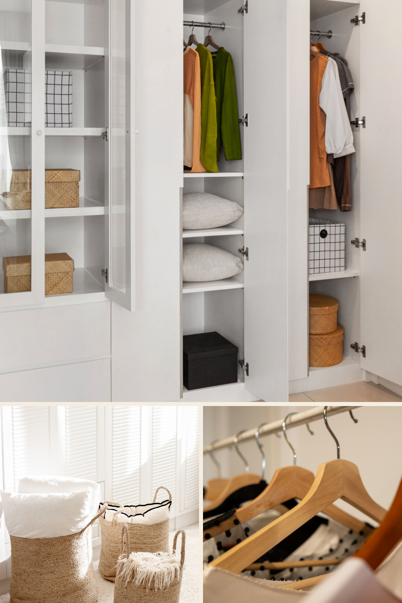
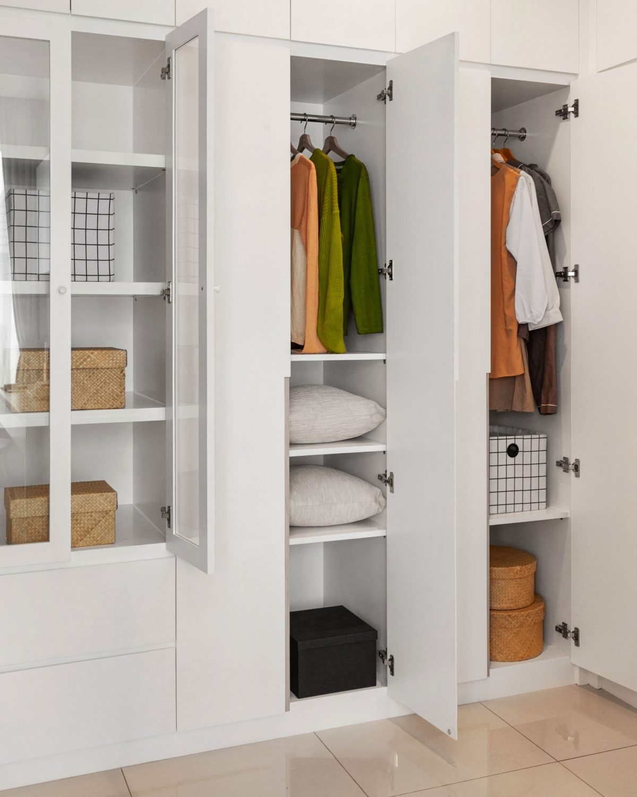
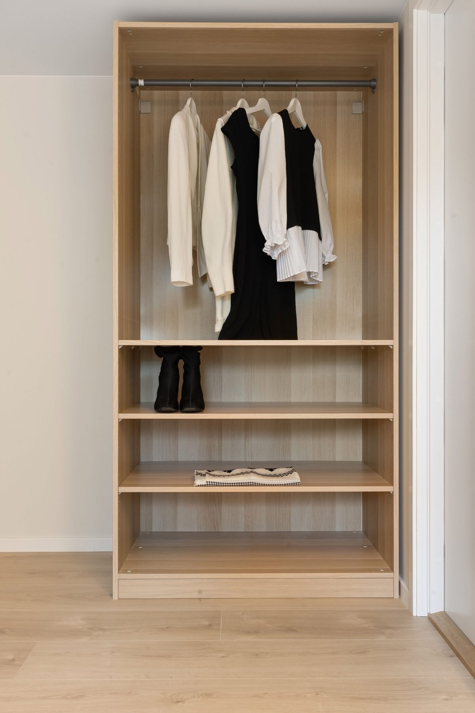
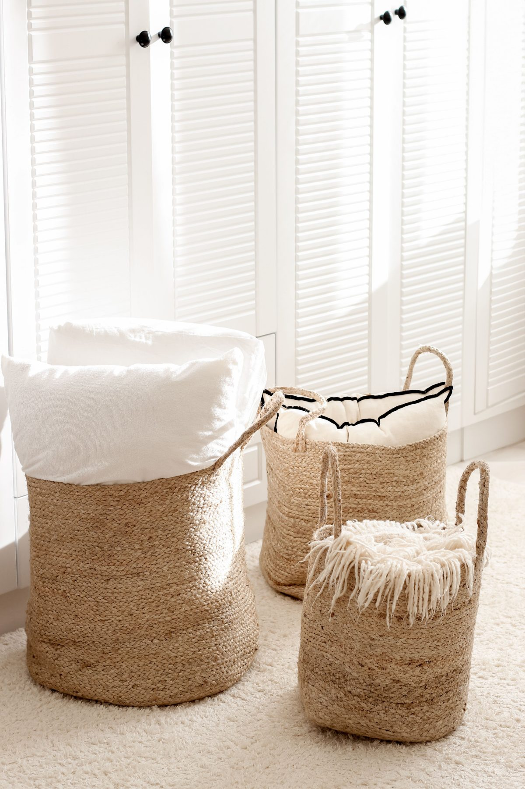
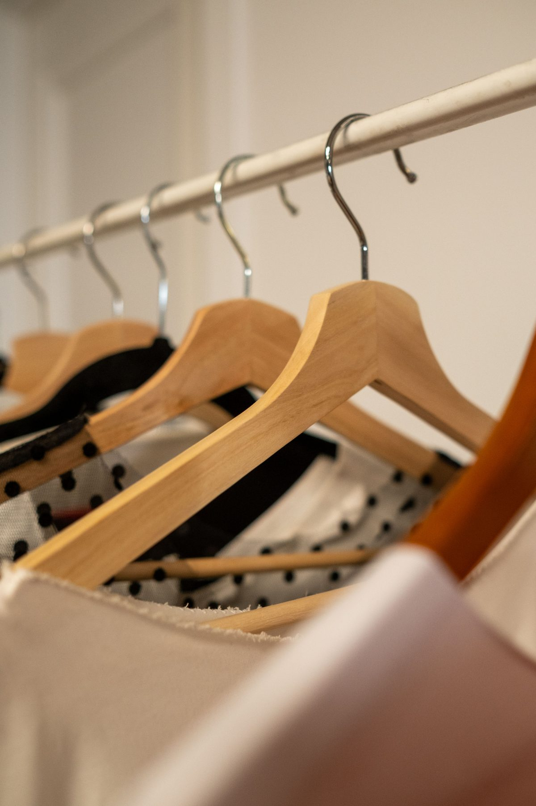
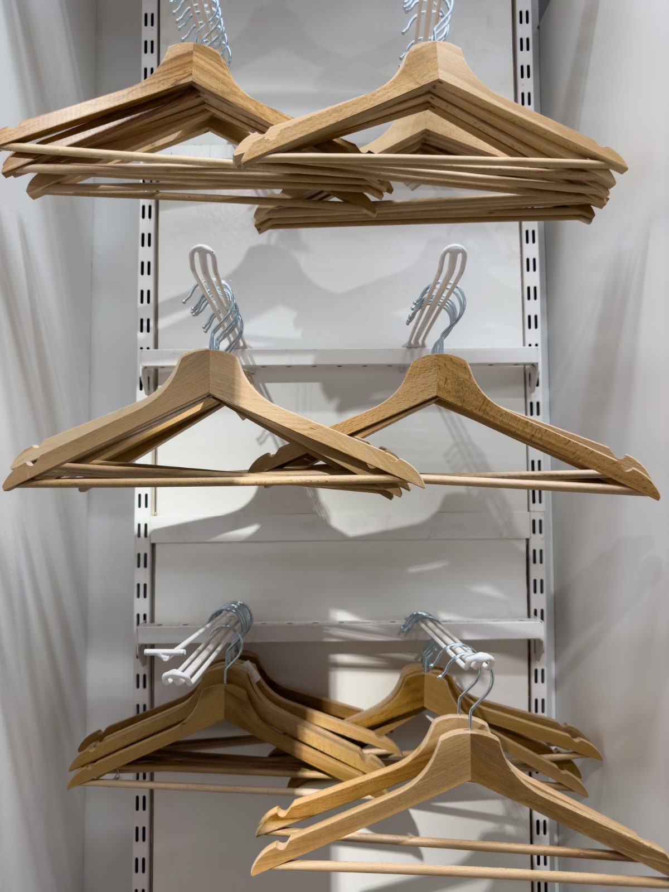
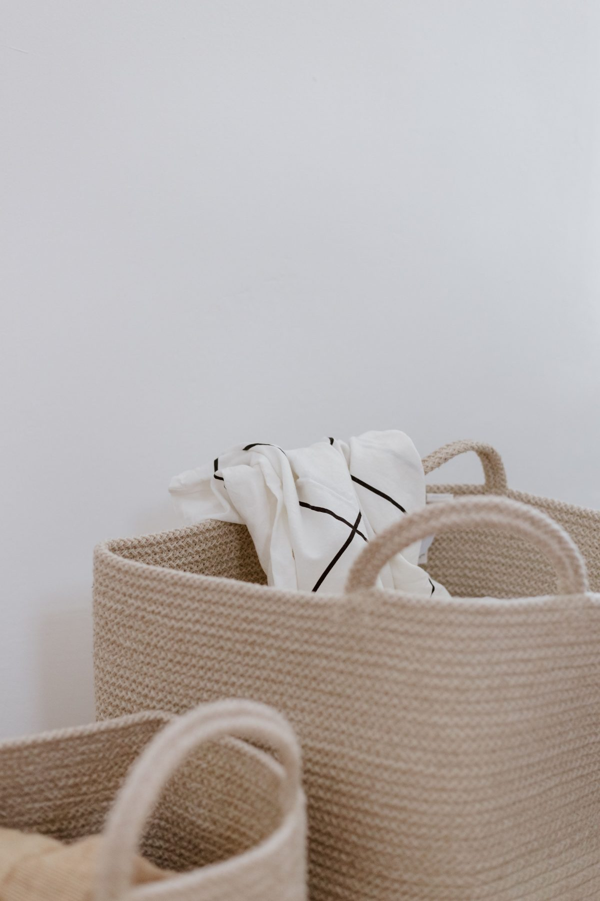

Closet Organization Ideas: 7 Calm Setups for a Fresh Start

Closet organization ideas for a calm start to the new year: glass-front wardrobe doors, matching wooden hangers, woven baskets and an open oak rail. Save this for your January closet refresh and pick the one idea that fits your space.

1. Glass-Front Wardrobe Doors
Clear panels on one door turn your best storage boxes into a quiet display.

2. Open Oak Hanging Rail
A single rail in light oak keeps a capsule wardrobe airy and easy to scan.

3. Woven Jute Floor Baskets
Tall braided baskets tuck throws and spare pillows beside the wardrobe.

4. Natural Wood Hangers
One matching set in warm beech makes every rail look pulled together.
5. Clip Hangers for Skirts and Pants
Wooden clip hangers keep bottoms flat and easy to see at a glance.

6. Adjustable Wall-Track Shelving
Slotted wall tracks let the rail and shelves move as your wardrobe changes.

7. Cotton Rope Storage Baskets
Soft rope baskets hide spare linens and keep the shelf tidy.
Photos: Pexels, Engin Akyurt